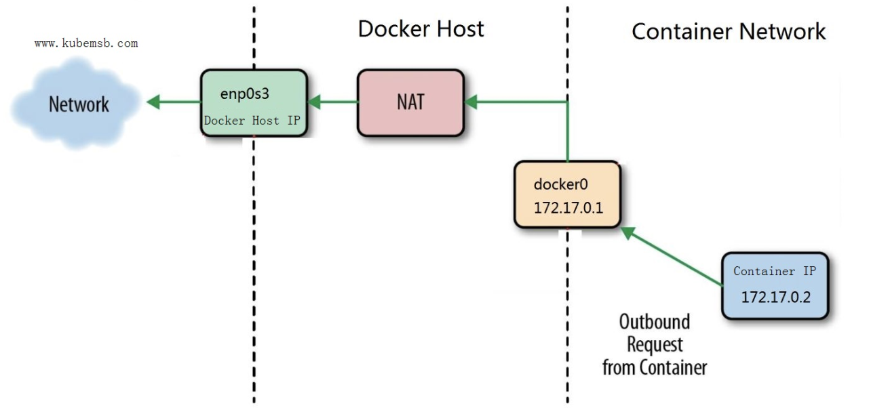
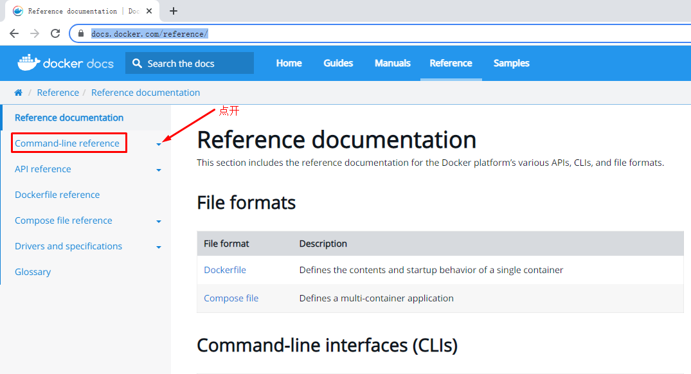
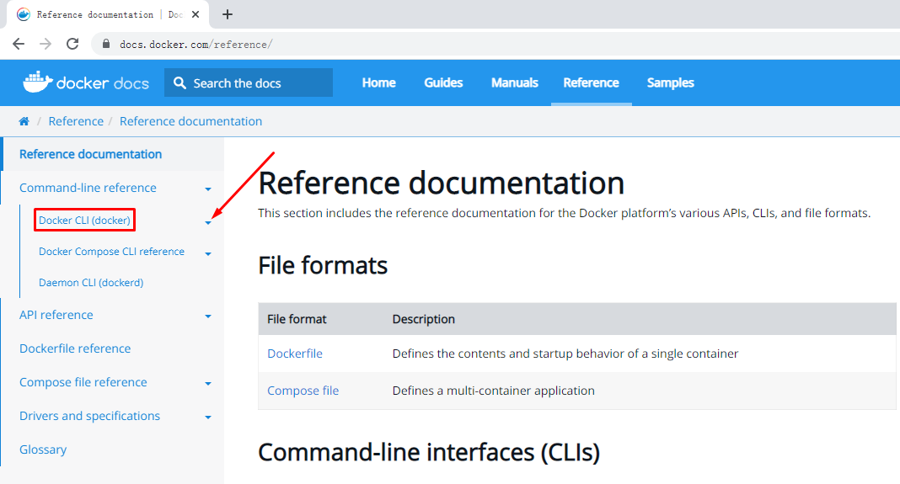

使用容器运行Nginx应用及Docker命令¶
一、使用容器运行Nginx应用¶
1.1 使用docker run命令运行Nginx应用¶
1.1.1 观察下载容器镜像过程¶
查找本地容器镜像文件
执行命令过程一：下载容器镜像
# docker run -d nginx:latest
Unable to find image 'nginx:latest' locally
latest: Pulling from library/nginx
a2abf6c4d29d: Downloading 1.966MB/31.36MB 下载中
a9edb18cadd1: Downloading 1.572MB/25.35MB
589b7251471a: Download complete 下载完成
186b1aaa4aa6: Download complete
b4df32aa5a72: Waiting 等待下载
a0bcbecc962e: Waiting
执行命令过程二：下载容器镜像
[root@localhost ~]# docker run -d nginx:latest
Unable to find image 'nginx:latest' locally
latest: Pulling from library/nginx
a2abf6c4d29d: Downloading 22.87MB/31.36MB
a9edb18cadd1: Downloading 22.78MB/25.35MB
589b7251471a: Waiting
186b1aaa4aa6: Waiting
b4df32aa5a72: Waiting
执行命令过程三：下载容器镜像
[root@localhost ~]# docker run -d nginx:latest
Unable to find image 'nginx:latest' locally
latest: Pulling from library/nginx
a2abf6c4d29d: Pull complete 下载完成
a9edb18cadd1: Pull complete
589b7251471a: Pull complete
186b1aaa4aa6: Pull complete
b4df32aa5a72: Waiting 等待下载
1.1.2 观察容器运行情况¶
# docker run -d nginx:latest
9834c8c18a7c7c89ab0ea4119d11bafe9c18313c8006bc02ce57ff54d9a1cc0c
命令解释
docker run 启动一个容器
-d 把容器镜像中需要执行的命令以daemon（守护进程）的方式运行
nginx 应用容器镜像的名称，通常表示该镜像为某一个软件
latest 表示上述容器镜像的版本，表示最新版本，用户可自定义其标识，例如v1或v2等
# docker ps
CONTAINER ID IMAGE COMMAND CREATED STATUS PORTS NAMES
9834c8c18a7c nginx:latest "/docker-entrypoint.…" 24 seconds ago Up 23 seconds 80/tcp condescending_pare
命令解释
docker ps 类似于Linux系统的ps命令，查看正在运行的容器，如果想查看没有运行的容器，需要在此命令后使用--all
输出内容解释
| CONTAINERID | IMAGE | COMMAND | CREATED | STATUS | PORTS | NAMES |
|---|---|---|---|---|---|---|
| 9834c8c18a7c | nginx:latest | "/docker-entrypoint.…" | 24 seconds ago | Up 23 seconds | 80/tcp | condescending_pare |
1.2 访问容器中运行的Nginx服务¶
1.2.1 确认容器IP地址¶
实际工作中不需要此步操作。
# docker inspect 9834
"GlobalIPv6Address": "",
"GlobalIPv6PrefixLen": 0,
"IPAddress": "172.17.0.2", 容器IP地址
"IPPrefixLen": 16,
"IPv6Gateway": "",
"MacAddress": "02:42:ac:11:00:02",
"Networks": {
"bridge": {
"IPAMConfig": null,
"Links": null,
"Aliases": null,
"NetworkID": "d3de2fdbc30ee36a55c1431ef3ae4578392e552009f00b2019b4720735fe5a60",
"EndpointID": "d91f47c9f756ff22dc599a207164f2e9366bd0c530882ce0f08ae2278fb3d50c",
"Gateway": "172.17.0.1",
"IPAddress": "172.17.0.2", 容器IP地址
"IPPrefixLen": 16,
"IPv6Gateway": "",
"GlobalIPv6Address": "",
"GlobalIPv6PrefixLen": 0,
"MacAddress": "02:42:ac:11:00:02",
"DriverOpts": null
}
}
}
}
]
命令解释
docker inspect 为查看容器结构信息命令
9834 为前面生成的容器ID号前4位，使用这个ID号时，由于其较长，使用时能最短识别即可。
1.2.2 容器网络说明¶

# ip a s
......
docker0网桥，用于为容器提供桥接，转发到主机之外的网络
5: docker0: <BROADCAST,MULTICAST,UP,LOWER_UP> mtu 1500 qdisc noqueue state UP group default
link/ether 02:42:d5:c3:d4:cc brd ff:ff:ff:ff:ff:ff
inet 172.17.0.1/16 brd 172.17.255.255 scope global docker0
valid_lft forever preferred_lft forever
inet6 fe80::42:d5ff:fec3:d4cc/64 scope link
valid_lft forever preferred_lft forever
与容器中的虚拟网络设备在同一个命名空间中，用于把容器中的网络连接到主机
9: veth393dece@if8: <BROADCAST,MULTICAST,UP,LOWER_UP> mtu 1500 qdisc noqueue master docker0 state UP group default
link/ether 02:e3:11:58:54:0f brd ff:ff:ff:ff:ff:ff link-netnsid 0
inet6 fe80::e3:11ff:fe58:540f/64 scope link
valid_lft forever preferred_lft forever
1.2.3 使用curl命令访问¶
# curl http://172.17.0.2
返回结果，表示访问成功！
<!DOCTYPE html>
<html>
<head>
<title>Welcome to nginx!</title>
<style>
html { color-scheme: light dark; }
body { width: 35em; margin: 0 auto;
font-family: Tahoma, Verdana, Arial, sans-serif; }
</style>
</head>
<body>
<h1>Welcome to nginx!</h1>
<p>If you see this page, the nginx web server is successfully installed and
working. Further configuration is required.</p>
<p>For online documentation and support please refer to
<a href="http://nginx.org/">nginx.org</a>.<br/>
Commercial support is available at
<a href="http://nginx.com/">nginx.com</a>.</p>
<p><em>Thank you for using nginx.</em></p>
</body>
</html>
二、Docker命令¶
2.1 Docker命令获取帮助方法¶
# docker -h
Flag shorthand -h has been deprecated, please use --help
Usage: docker [OPTIONS] COMMAND 用法
A self-sufficient runtime for containers 功能介绍
Options: 选项
--config string Location of client config files (default "/root/.docker")
-c, --context string Name of the context to use to connect to the daemon (overrides
DOCKER_HOST env var and default context set with "docker context use")
-D, --debug Enable debug mode
-H, --host list Daemon socket(s) to connect to
-l, --log-level string Set the logging level ("debug"|"info"|"warn"|"error"|"fatal")
(default "info")
--tls Use TLS; implied by --tlsverify
--tlscacert string Trust certs signed only by this CA (default "/root/.docker/ca.pem")
--tlscert string Path to TLS certificate file (default "/root/.docker/cert.pem")
--tlskey string Path to TLS key file (default "/root/.docker/key.pem")
--tlsverify Use TLS and verify the remote
-v, --version Print version information and quit
Management Commands: 管理类命令
app* Docker App (Docker Inc., v0.9.1-beta3)
builder Manage builds
buildx* Docker Buildx (Docker Inc., v0.7.1-docker)
config Manage Docker configs
container Manage containers
context Manage contexts
image Manage images
manifest Manage Docker image manifests and manifest lists
network Manage networks
node Manage Swarm nodes
plugin Manage plugins
scan* Docker Scan (Docker Inc., v0.12.0)
secret Manage Docker secrets
service Manage services
stack Manage Docker stacks
swarm Manage Swarm
system Manage Docker
trust Manage trust on Docker images
volume Manage volumes
Commands: 未分组命令
attach Attach local standard input, output, and error streams to a running container
build Build an image from a Dockerfile
commit Create a new image from a container's changes
cp Copy files/folders between a container and the local filesystem
create Create a new container
diff Inspect changes to files or directories on a container's filesystem
events Get real time events from the server
exec Run a command in a running container
export Export a container's filesystem as a tar archive
history Show the history of an image
images List images
import Import the contents from a tarball to create a filesystem image
info Display system-wide information
inspect Return low-level information on Docker objects
kill Kill one or more running containers
load Load an image from a tar archive or STDIN
login Log in to a Docker registry
logout Log out from a Docker registry
logs Fetch the logs of a container
pause Pause all processes within one or more containers
port List port mappings or a specific mapping for the container
ps List containers
pull Pull an image or a repository from a registry
push Push an image or a repository to a registry
rename Rename a container
restart Restart one or more containers
rm Remove one or more containers
rmi Remove one or more images
run Run a command in a new container
save Save one or more images to a tar archive (streamed to STDOUT by default)
search Search the Docker Hub for images
start Start one or more stopped containers
stats Display a live stream of container(s) resource usage statistics
stop Stop one or more running containers
tag Create a tag TARGET_IMAGE that refers to SOURCE_IMAGE
top Display the running processes of a container
unpause Unpause all processes within one or more containers
update Update configuration of one or more containers
version Show the Docker version information
wait Block until one or more containers stop, then print their exit codes
2.2 Docker官网提供的命令说明¶
网址链接：https://docs.docker.com/reference/



2.3 docker命令应用¶
2.3.1 docker run¶
# docker run -i -t --name c1 centos:latest bash
[root@948f234e22a1 /]#
命令解释
docker run 运行一个命令在容器中，命令是主体，没有命令容器就会消亡
-i 交互式
-t 提供终端
--name c1 把将运行的容器命名为c1
centos:latest 使用centos最新版本容器镜像
bash 在容器中执行的命令
查看主机名
[root@948f234e22a1 /]#
查看网络信息
[root@948f234e22a1 /]# ip a s
1: lo: <LOOPBACK,UP,LOWER_UP> mtu 65536 qdisc noqueue state UNKNOWN group default qlen 1000
link/loopback 00:00:00:00:00:00 brd 00:00:00:00:00:00
inet 127.0.0.1/8 scope host lo
valid_lft forever preferred_lft forever
12: eth0@if13: <BROADCAST,MULTICAST,UP,LOWER_UP> mtu 1500 qdisc noqueue state UP group default
link/ether 02:42:ac:11:00:03 brd ff:ff:ff:ff:ff:ff link-netnsid 0
inet 172.17.0.3/16 brd 172.17.255.255 scope global eth0
valid_lft forever preferred_lft forever
查看进程
[root@948f234e22a1 /]# ps aux
USER PID %CPU %MEM VSZ RSS TTY STAT START TIME COMMAND
root 1 0.0 0.1 12036 2172 pts/0 Ss 09:58 0:00 bash
root 16 0.0 0.0 44652 1784 pts/0 R+ 10:02 0:00 ps aux
查看用户
[root@948f234e22a1 /]# cat /etc/passwd
root:x:0:0:root:/root:/bin/bash
bin:x:1:1:bin:/bin:/sbin/nologin
daemon:x:2:2:daemon:/sbin:/sbin/nologin
adm:x:3:4:adm:/var/adm:/sbin/nologin
lp:x:4:7:lp:/var/spool/lpd:/sbin/nologin
sync:x:5:0:sync:/sbin:/bin/sync
shutdown:x:6:0:shutdown:/sbin:/sbin/shutdown
halt:x:7:0:halt:/sbin:/sbin/halt
mail:x:8:12:mail:/var/spool/mail:/sbin/nologin
operator:x:11:0:operator:/root:/sbin/nologin
games:x:12:100:games:/usr/games:/sbin/nologin
ftp:x:14:50:FTP User:/var/ftp:/sbin/nologin
nobody:x:65534:65534:Kernel Overflow User:/:/sbin/nologin
dbus:x:81:81:System message bus:/:/sbin/nologin
systemd-coredump:x:999:997:systemd Core Dumper:/:/sbin/nologin
systemd-resolve:x:193:193:systemd Resolver:/:/sbin/nologin
查看目录
[root@948f234e22a1 /]# pwd
/
[root@948f234e22a1 /]# ls
bin etc lib lost+found mnt proc run srv tmp var
dev home lib64 media opt root sbin sys usr
退出命令执行，观察容器运行情况
[root@948f234e22a1 /]# exit
exit
[root@localhost ~]#
2.3.2 docker ps¶
# docker ps
CONTAINER ID IMAGE COMMAND CREATED STATUS PORTS NAMES
命令解释
docker ps 查看正在运行的容器，本案例由于没有命令在容器中运行，因此容器被停止了，所以本次查看没有结果。
# docker ps --all
CONTAINER ID IMAGE COMMAND CREATED STATUS PORTS NAMES
948f234e22a1 centos:latest "bash" 10 minutes ago Exited (0) 2 minutes ago c1
| CONTAINERID | IMAGE | COMMAND | CREATED | STATUS | PORTS | NAMES |
|---|---|---|---|---|---|---|
| 948f234e22a1 | centos:latest | "bash" | 10 minutes ago | Exited (0) 2 minutes ago | c1 |
命令解释
docker ps --all 可以查看正在运行的和停止运行的容器
2.3.3 docker inspect¶
# docker run -it --name c2 centos:latest bash
[root@9f2eea16da4c /]#
操作说明
在上述提示符处按住ctrl键，再按p键与q键，可以退出交互式的容器，容器会处于运行状态。
# docker ps
CONTAINER ID IMAGE COMMAND CREATED STATUS PORTS NAMES
9f2eea16da4c centos:latest "bash" 37 seconds ago Up 35 seconds c2
命令解释
可以看到容器处于运行状态
# docker inspect c2
"Networks": {
"bridge": {
"IPAMConfig": null,
"Links": null,
"Aliases": null,
"NetworkID": "d3de2fdbc30ee36a55c1431ef3ae4578392e552009f00b2019b4720735fe5a60",
"EndpointID": "d1a2b7609f2f73a6cac67229a4395eef293f695c0ac4fd6c9c9e6913c9c85c1c",
"Gateway": "172.17.0.1",
"IPAddress": "172.17.0.2",
"IPPrefixLen": 16,
"IPv6Gateway": "",
"GlobalIPv6Address": "",
"GlobalIPv6PrefixLen": 0,
"MacAddress": "02:42:ac:11:00:02",
"DriverOpts": null
}
}
}
}
]
命令解释
docker inpect 查看容器详细信息
2.3.4 docker exec¶
# docker exec -it c2 ls /root
anaconda-ks.cfg anaconda-post.log original-ks.cfg
命令解释
docker exec 在容器外实现与容器交互执行某命令
-it 交互式
c2 正在运行的容器名称
ls /root 在正在运行的容器中运行相关的命令
下面命令与上面命令执行效果一致
# docker exec c2 ls /root
anaconda-ks.cfg
anaconda-post.log
original-ks.cfg
2.3.5 docker attach¶
查看正在运行的容器
# docker ps
CONTAINER ID IMAGE COMMAND CREATED STATUS PORTS NAMES
9f2eea16da4c centos:latest "bash" 13 minutes ago Up 13 minutes c2
[root@localhost ~]# docker attach c2
[root@9f2eea16da4c /]#
命令解释
docker attach 类似于ssh命令，可以进入到容器中
c2 正在运行的容器名称
说明
docker attach 退出容器时，如不需要容器再运行，可直接使用exit退出；如需要容器继续运行，可使用ctrl+p+q
2.3.6 docker stop¶
# docker ps
CONTAINER ID IMAGE COMMAND CREATED STATUS PORTS NAMES
9f2eea16da4c centos:latest "bash" 22 minutes ago Up 22 minutes c2
# docker stop 9f2eea
9f2eea
# docker ps --all
CONTAINER ID IMAGE COMMAND CREATED STATUS PORTS NAMES
9f2eea16da4c centos:latest "bash" 22 minutes ago Exited (137) 4 seconds ago c2
2.3.7 docker start¶
# docker ps --all
CONTAINER ID IMAGE COMMAND CREATED STATUS PORTS NAMES
9f2eea16da4c centos:latest "bash" 22 minutes ago Exited (137) 4 seconds ago c2
# docker start 9f2eea
9f2eea
# docker ps
CONTAINER ID IMAGE COMMAND CREATED STATUS PORTS NAMES
9f2eea16da4c centos:latest "bash" 24 minutes ago Up 16 seconds c2
2.3.8 docker top¶
在Docker Host查看容器中运行的进程信息
# docker top c2
UID PID PPID C STIME TTY TIME CMD
root 69040 69020 0 18:37 pts/0 00:00:00 bash
| UID | PID | PPID | C | STIME | TTY | TIME | CMD |
|---|---|---|---|---|---|---|---|
| root | 69040 | 69020 | 0 | 18:37 | pts/0 | 00:00:00 | bash |
命令解释
docker top 查看container内进程信息，指在docker host上查看，与docker exec -it c2 ps -ef不同。
输出说明
UID 容器中运行的命令用户ID
PID 容器中运行的命令PID
PPID 容器中运行的命令父PID，由于PPID是一个容器，此可指为容器在Docker Host中进程ID
C 占用CPU百分比
STIME 启动时间
TTY 运行所在的终端
TIME 运行时间
CMD 执行的命令
2.3.9 docker rm¶
如果容器已停止，使用此命令可以直接删除；如果容器处于运行状态，则需要提前关闭容器后，再删除容器。下面演示容器正在运行关闭后删除的方法。
2.3.9.1 指定删除容器¶
# docker ps
CONTAINER ID IMAGE COMMAND CREATED STATUS PORTS NAMES
9f2eea16da4c centos:latest "bash" 2 days ago Up 3 seconds c2
# docker stop c2
或
# docker stop 9f2eea16da4c
# docker rm c2
或
# docker rm 9f2eea16da4c
2.3.9.2 批量删除容器¶
# docker ps --all
CONTAINER ID IMAGE COMMAND CREATED STATUS PORTS NAMES
948f234e22a1 centos:latest "bash" 2 days ago Exited (0) 2 days ago c1
01cb3e01273c centos:latest "bash" 2 days ago Exited (0) 2 days ago systemimage1
46d950fdfb33 nginx:latest "/docker-ent..." 2 days ago Exited (0) 2 days ago upbeat_goldberg
# docker ps --all | awk '{if (NR>=2){print $1}}' | xargs docker rm